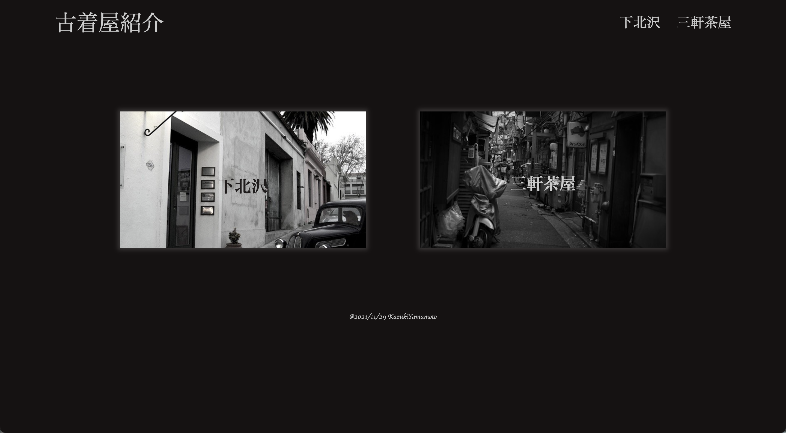

古着屋紹介サイト
制作期間: 14日間
背景・感想
趣味が古着巡りな私がおすすめする古着屋を紹介するサイトを作成したいと思い作ってみました。使用技術はHTML/CSS/Jqueryです。古着紹介なので少しでもスタイリッシュにしたいと思い、フォントにもこだわりました。
制作期間: 14日間
趣味が古着巡りな私がおすすめする古着屋を紹介するサイトを作成したいと思い作ってみました。使用技術はHTML/CSS/Jqueryです。古着紹介なので少しでもスタイリッシュにしたいと思い、フォントにもこだわりました。